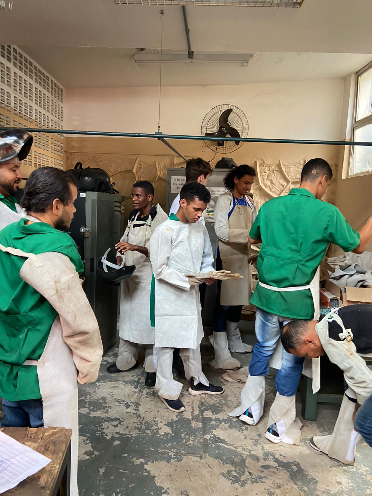

A Semana da Tecnologia Mecânica é um evento anual realizado pelo Instituto Federal da Bahia, com o objetivo de conectar estudantes, professores, profissionais e empresas do setor mecânico e industrial. Desde sua criação, tem promovido conhecimento, inovação e desenvolvimento profissional por meio de palestras, workshops, minicursos e mesas-redondas.
Com um compromisso contínuo com a formação técnica e científica, o evento se destaca por criar um ambiente colaborativo, onde a teoria encontra a prática e novas ideias ganham forma.
